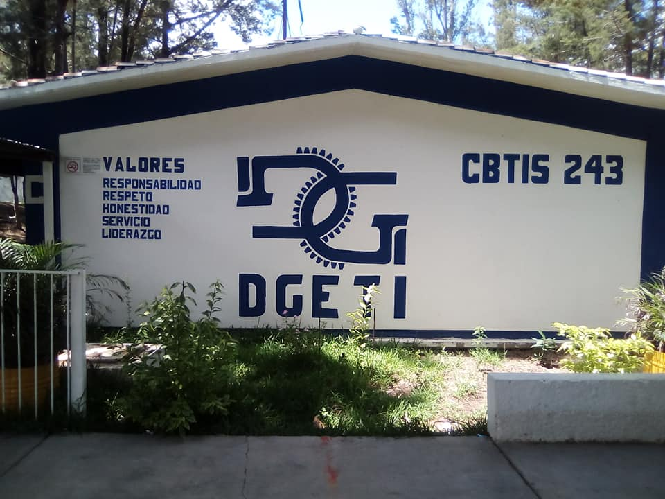

MISIÓN
Formar personas con conocimientos tecnológicos en las áreas industriales, comerciales y de servicios, a través de la preparación de bachilleres y profesioneles técnicos con el fin de contribuir al desaarrollo sustentable del país.
VISIÓN
Ser una institusión de Educasión Media Superior, certificada, orientada al aprendizajey el desarrollo de conocimientos tecnológicos y humaniticos.
CONÓCENOS.
CBTIS No. 243.
Es una institusión de educativa de nivel medio superior ecológica en el que podrás cursar tu bachilleraro y además de eso podrás cursar una carrera tecnica de las que el plantel posée, tales como: Enfermería general, Programación, Contabilidad, Construcción u Ofimática.
ocultar img
mostrar img

Durante tu estancia en el bachillerato tecnológico industrial y de servicios cursarás:
- Preparatoria.
- Carrera técnica.
- un año de servicio social.
- 240 horas de prácticas profesionales.
En el proceso de formación de los diferentes modulos de carreras técnicas el alumno desarrollará competencias profesionales tales como las siguientes:
Enfermería General.
- Aplica medidas preventivas, técnicas de atención al individuo, la familia y la comunidad, en el primero y segundo niveles de atención.
- Aplica cuidados de mediana complejidad para la recuperación de la salud , con bases éticas y legales.
- Realiza procedimientos médico quirúrgicos de calidad para el cuidado del adulto, con base en el proceso enfermero y administrativo.
- Aplica el proceso de atención de enfermería en el cuidado de la mujer en edad reproductiva y del niño.
- Aplica el proceso enfermero en el cuidado del adulto mayor y en los programas de salud a la comunidad.
Programación.
- Desarrolla e instala software de aplicación utilizando programación estructurada, con almacenamiento persistente de los datos.
- Desarrolla software de aplicación utilizando programación orientada a objetos, con almacenamiento persistente de los datos.
- Desarrolla aplicaciones web y móviles.
- Administra sistemas operativos, de aplicaciones y servicios.
- Desarrolla, administra y configura soluciones de e-learning y comercio electrónico.
Contabilidad.
- Registra operaciones contables de empresas comerciales y de servicios.
- Opera los procesos contables dentro de un sistema electrónico.
- Registra operaciones contables de una entidad fabril.
- Determina las contribuciones fiscales de personas físicas y morales.
- Asiste en actividades de auditoria de una entidad.
Construcción.
- Realiza dibujos de planos arquitectónicos con equipo básico y software.
- Supervisa obras de construcción de casa habitación.
- Supervisa las instalaciones de casa habitación.
- Realiza levantamiento y trazo topográfico con equipo convencional, y cuantifica volúmenes de obra.
- Realiza levantamiento y trazo topográfico con estación total y GPS, y presupuesto de obra.
Ofimática.
- Gestiona hardware y software de la ofimática.
- Gestiona información de manera local.
- Gestiona información de manera remota.
- Diseña y gestiona bases de datos ofimáticas.
- Establece comunicación ofimática.